材料 2個分
※粉量を変えると自動計算されます
生地
カステラ
作り方
生地
STEP 1
仕込み水を作る
牛乳をレンジ600Wで1分加熱します。そこに砂糖、ドライイーストを加え、よく混ぜ合わせます。牛乳が熱すぎるとイーストに影響するため、人肌ほどの温かさにしてから加えます。
牛乳をレンジ600Wで1分加熱します。そこに砂糖、ドライイーストを加え、よく混ぜ合わせます。牛乳が熱すぎるとイーストに影響するため、人肌ほどの温かさにしてから加えます。
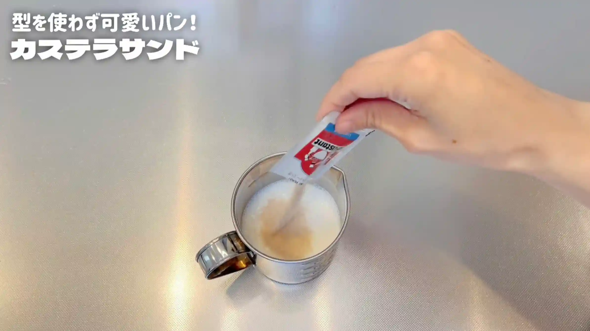
STEP 2
粉類と仕込み水を混ぜ合わせる（[動画 00:36]）
強力粉と塩を混ぜ合わせ、仕込み水を加えてヘラで1分半ほど混ぜます。粉気がなくなり、生地がひとまとまりになればOKです。
強力粉と塩を混ぜ合わせ、仕込み水を加えてヘラで1分半ほど混ぜます。粉気がなくなり、生地がひとまとまりになればOKです。
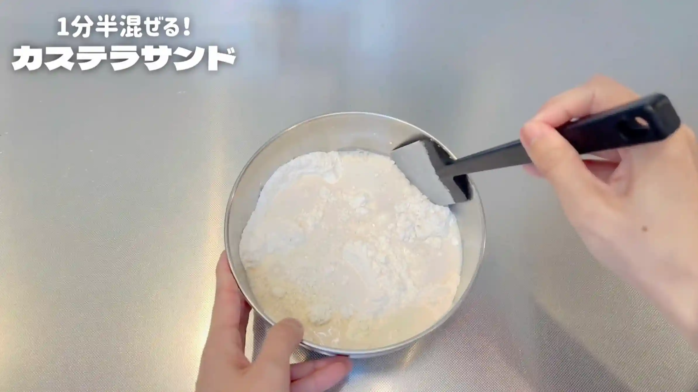
STEP 3
バターを加え、3分捏ねる（[動画 02:33]）
バターを加え、手で3分ほど捏ねます。途中生地がベタついてきますが、ここでは生地をツルッとするまで捏ね上げる必要はなく、短時間の「ちょい捏ね」で仕上げます。
バターを加え、手で3分ほど捏ねます。途中生地がベタついてきますが、ここでは生地をツルッとするまで捏ね上げる必要はなく、短時間の「ちょい捏ね」で仕上げます。
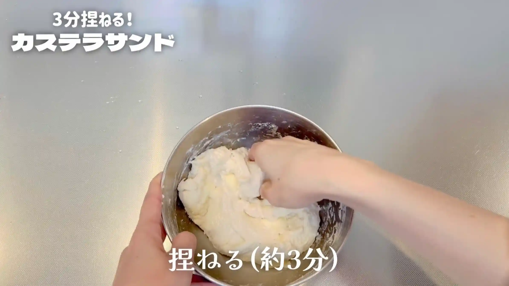
STEP 4
室温で15分おく
乾燥しないようにラップをして、生地を休ませます。ここでもまだ生地がツルッとしていなくても大丈夫です。
乾燥しないようにラップをして、生地を休ませます。ここでもまだ生地がツルッとしていなくても大丈夫です。
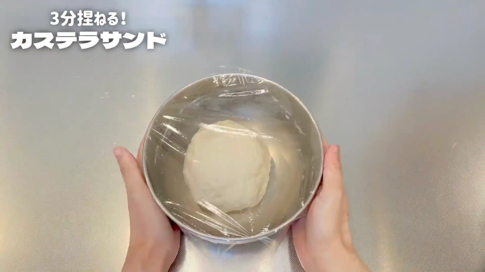
STEP 5
生地をボウルの中で叩く（[動画 04:14]）
生地をボウルの中で1分ほど叩きます。表面がツルッとなめらかになってきたらOKです。生地を叩かずにゆっくり休ませるだけでも作ることができますが、この工程を行うと、生地が整い、焼き上がりもなめらかでふわっとした食感になりました。任意の工程ですが、生地を叩く作業はすごく楽しいので、ぜひお試しください。
生地をボウルの中で1分ほど叩きます。表面がツルッとなめらかになってきたらOKです。生地を叩かずにゆっくり休ませるだけでも作ることができますが、この工程を行うと、生地が整い、焼き上がりもなめらかでふわっとした食感になりました。任意の工程ですが、生地を叩く作業はすごく楽しいので、ぜひお試しください。
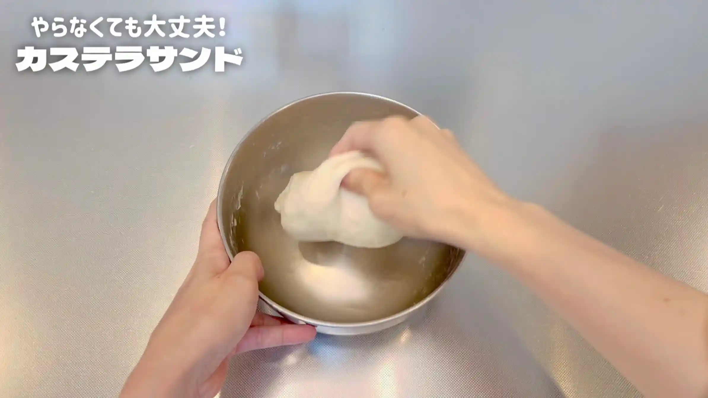
STEP 6
室温で60分ほどおく（[動画 05:18]）
生地を一次発酵させます。ボウルの半分に生地を寄せ、2倍に膨らんだ生地を想定して高さを目安にしておくと、発酵具合を見極めやすくなります。乾燥しないようにラップをして、生地が元の2倍ほどに膨らんだら次の工程へ進みます。
生地を一次発酵させます。ボウルの半分に生地を寄せ、2倍に膨らんだ生地を想定して高さを目安にしておくと、発酵具合を見極めやすくなります。乾燥しないようにラップをして、生地が元の2倍ほどに膨らんだら次の工程へ進みます。
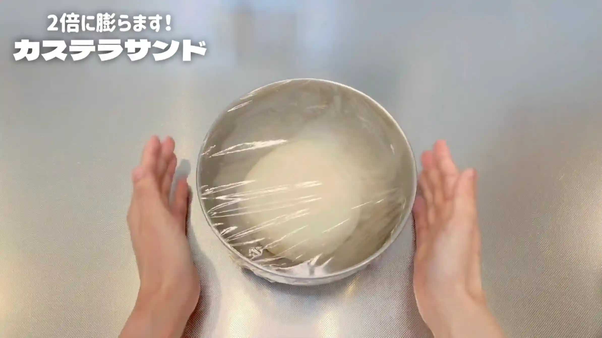
STEP 7
生地を4等分して丸める（[動画 06:05]）
生地を軽く押して中の大きな気泡を抜き、4等分します。それぞれ表面がなめらかになるように丸め、大きさをそろえておきます。
生地を軽く押して中の大きな気泡を抜き、4等分します。それぞれ表面がなめらかになるように丸め、大きさをそろえておきます。
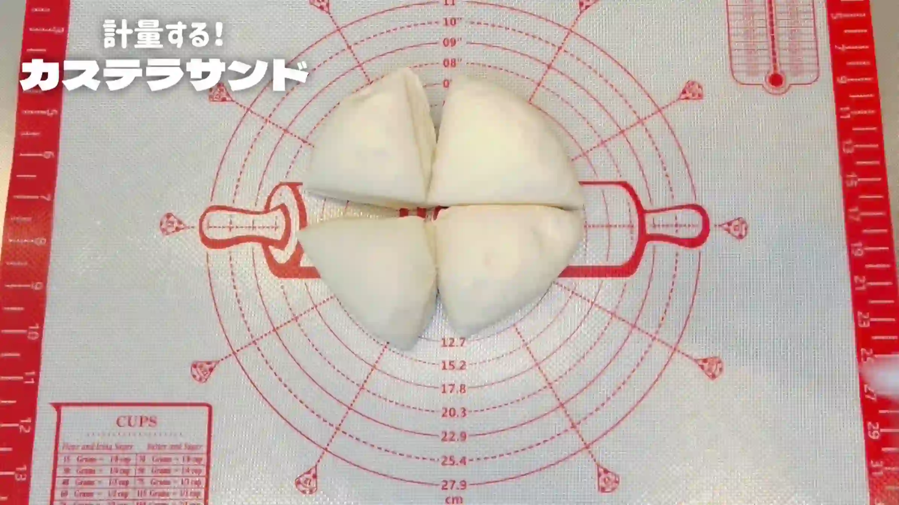
STEP 8
室温で15分おく
乾燥しないようにラップをして生地を休ませます。休ませることで生地がゆるみ、この後の成形がしやすくなります。
乾燥しないようにラップをして生地を休ませます。休ませることで生地がゆるみ、この後の成形がしやすくなります。
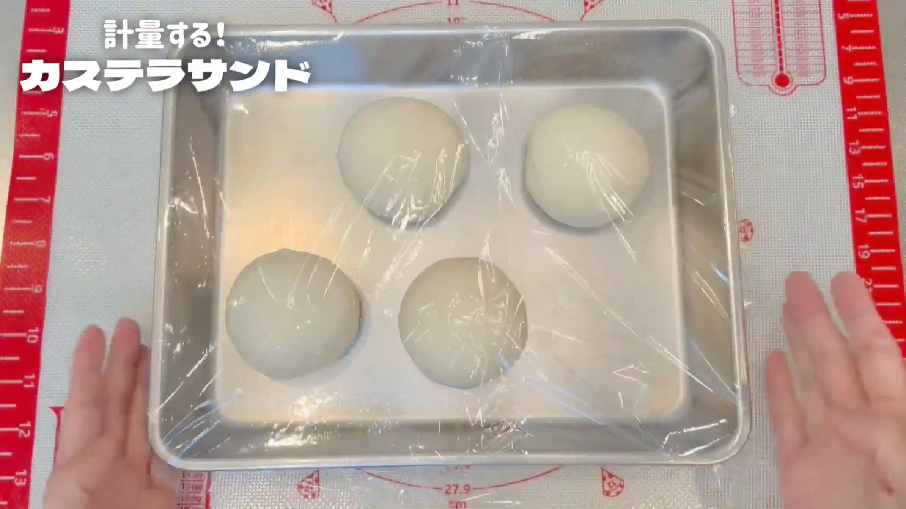
STEP 9
縦20㎝×横12㎝に伸ばす（[動画 07:31]）
手で生地の厚みをそろえたら、めん棒で縦20㎝×横12㎝ほどの長方形に伸ばします。伸ばす際は、真ん中に生地が溜まりやすいため、中央から外側に広げるように伸ばしていきます。
手で生地の厚みをそろえたら、めん棒で縦20㎝×横12㎝ほどの長方形に伸ばします。伸ばす際は、真ん中に生地が溜まりやすいため、中央から外側に広げるように伸ばしていきます。
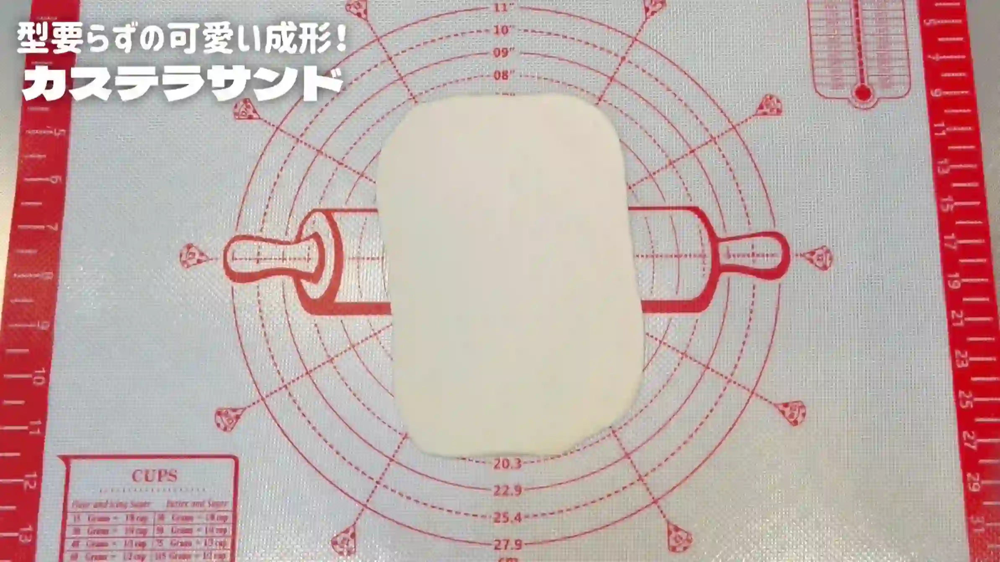
STEP 10
生地を巻く（[動画 08:08]）
生地を縦方向に端から巻き、20㎝ほどの棒状に整えます。
生地を縦方向に端から巻き、20㎝ほどの棒状に整えます。
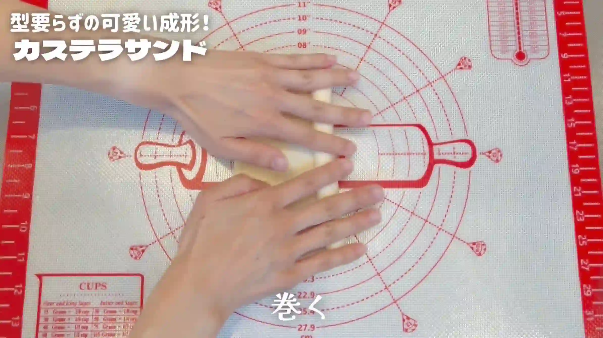
STEP 11
とじ目を閉じる
巻き終わりをしっかり閉じます。とじ目が開いていると焼いている間に生地がほどけやすいため、最後まできちんと閉じておきます。
巻き終わりをしっかり閉じます。とじ目が開いていると焼いている間に生地がほどけやすいため、最後まできちんと閉じておきます。
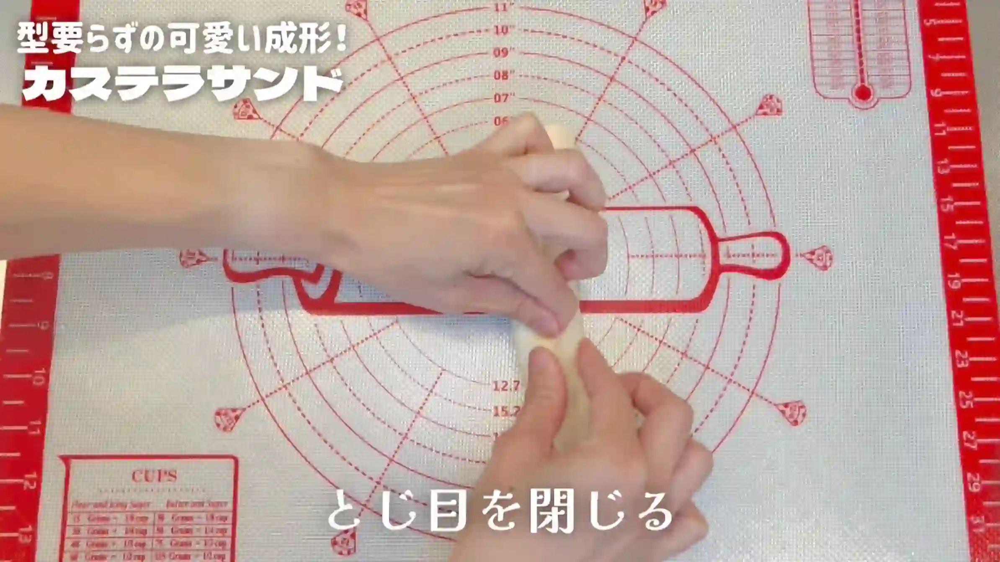
STEP 12
天板に生地を並べる
天板にオーブンシートを敷き、生地同士の間に少し隙間をあけて並べます。焼き上げた時に、生地が繋がって山形になるようにしたいので、隙間はあけすぎないのがポイントです。
天板にオーブンシートを敷き、生地同士の間に少し隙間をあけて並べます。焼き上げた時に、生地が繋がって山形になるようにしたいので、隙間はあけすぎないのがポイントです。
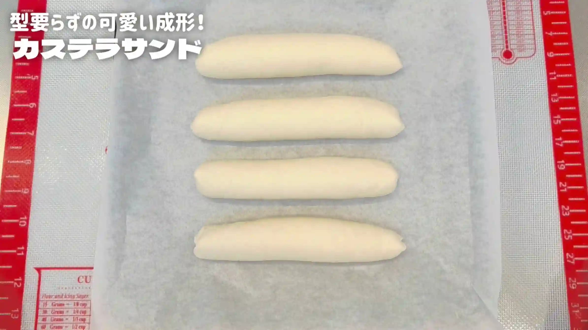
STEP 13
室温で30分おく
乾燥しないようにラップをして二次発酵させます。30分を目安に、生地がふっくらと膨らんでくるまでおいておきます。
乾燥しないようにラップをして二次発酵させます。30分を目安に、生地がふっくらと膨らんでくるまでおいておきます。
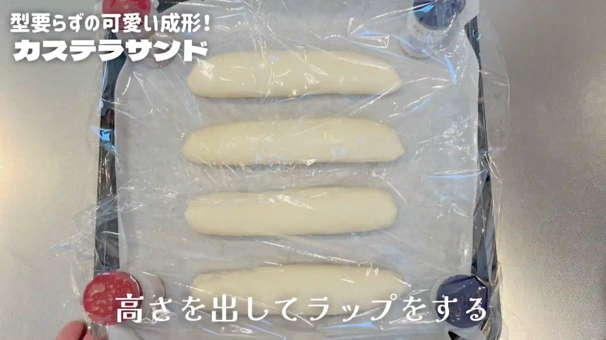
STEP 14
オーブンを200℃で予熱する
焼成前にオーブンを200℃までしっかり予熱しておきます。
焼成前にオーブンを200℃までしっかり予熱しておきます。
STEP 15
牛乳を塗り、オーブン200℃で20分焼く
焼成前に生地の表面へ牛乳を薄く塗ります。表面にきれいな焼き色がつきやすくなり、香ばしい仕上がりになります。焼き時間は目安とし、表面がきつね色になるまで焼いてください。
焼成前に生地の表面へ牛乳を薄く塗ります。表面にきれいな焼き色がつきやすくなり、香ばしい仕上がりになります。焼き時間は目安とし、表面がきつね色になるまで焼いてください。
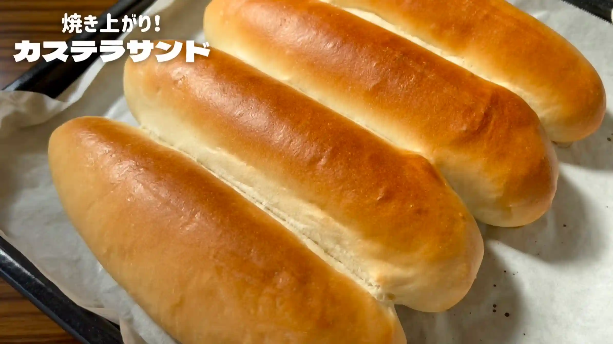
カステラ
STEP 1
卵白を1時間冷凍する
卵白を冷凍庫に入れて1時間冷やしておきます。今回は「冷凍した卵白は早くメレンゲができる」という方法を試しましたが、実際には普通の卵白と同じくらい時間がかかりました。冷凍することによる泡立ちやすさは、今回の試作では特に感じませんでした。
卵白を冷凍庫に入れて1時間冷やしておきます。今回は「冷凍した卵白は早くメレンゲができる」という方法を試しましたが、実際には普通の卵白と同じくらい時間がかかりました。冷凍することによる泡立ちやすさは、今回の試作では特に感じませんでした。
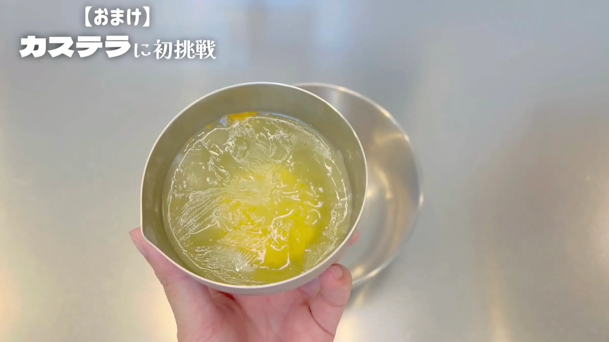
STEP 2
オーブンを180℃に予熱する
カステラ生地ができたらすぐに焼けるよう、あらかじめオーブンを180℃に予熱しておきます。
カステラ生地ができたらすぐに焼けるよう、あらかじめオーブンを180℃に予熱しておきます。
STEP 3
卵白を泡立て、砂糖を入れる
卵白を泡立ててもったりしてきたら、砂糖を3回に分けて加えます。一度に入れず、数回に分けて加えながら泡立てることで、きめの細かいメレンゲに仕上げていきます。
卵白を泡立ててもったりしてきたら、砂糖を3回に分けて加えます。一度に入れず、数回に分けて加えながら泡立てることで、きめの細かいメレンゲに仕上げていきます。
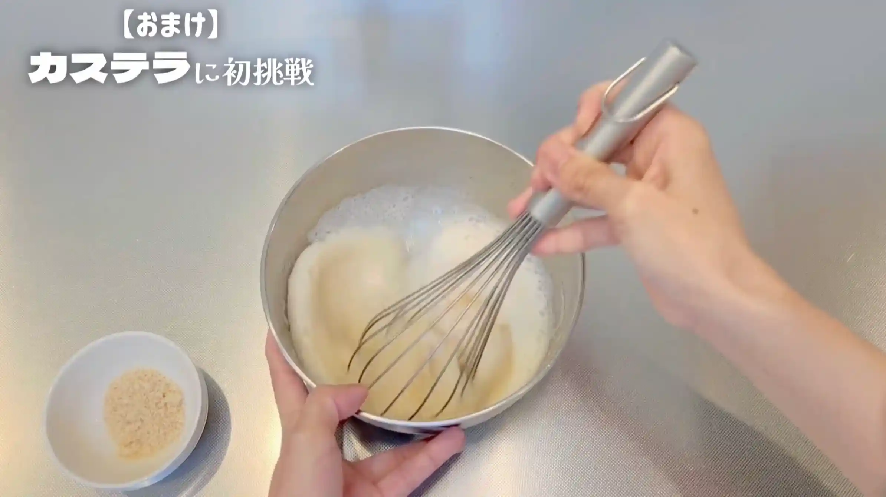
STEP 4
角が立つまで混ぜる
メレンゲをしっかり泡立て、持ち上げたときに角が立つ状態まで仕上げます。この後に卵黄や薄力粉を加えるため、ここでしっかりとメレンゲを作っておきます。
メレンゲをしっかり泡立て、持ち上げたときに角が立つ状態まで仕上げます。この後に卵黄や薄力粉を加えるため、ここでしっかりとメレンゲを作っておきます。
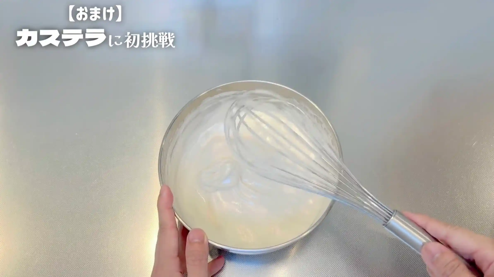
STEP 5
卵黄を加え混ぜる
卵黄を加え、全体が均一になるまで混ぜ合わせます。ここではメレンゲの状態を確認しながら、卵黄が残らないように混ぜます。
卵黄を加え、全体が均一になるまで混ぜ合わせます。ここではメレンゲの状態を確認しながら、卵黄が残らないように混ぜます。
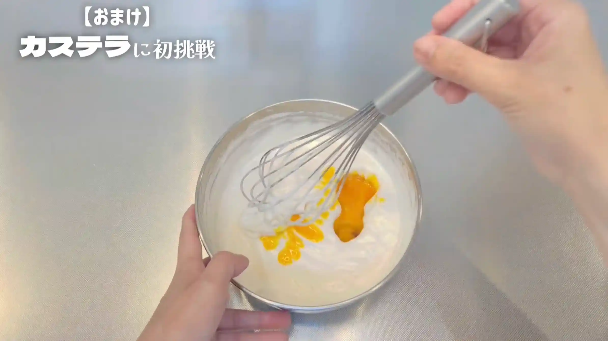
STEP 6
薄力粉を加え、ヘラで混ぜる
薄力粉を加え、粉っぽさがなくなるまでヘラで混ぜ合わせます。今回は「さっくり混ぜる」方法で作ったところ、焼き上がりに粉っぽさが残ったため、ここはさっくりしすぎず、粉が残らないようにしっかり混ぜるのがポイントです。
薄力粉を加え、粉っぽさがなくなるまでヘラで混ぜ合わせます。今回は「さっくり混ぜる」方法で作ったところ、焼き上がりに粉っぽさが残ったため、ここはさっくりしすぎず、粉が残らないようにしっかり混ぜるのがポイントです。
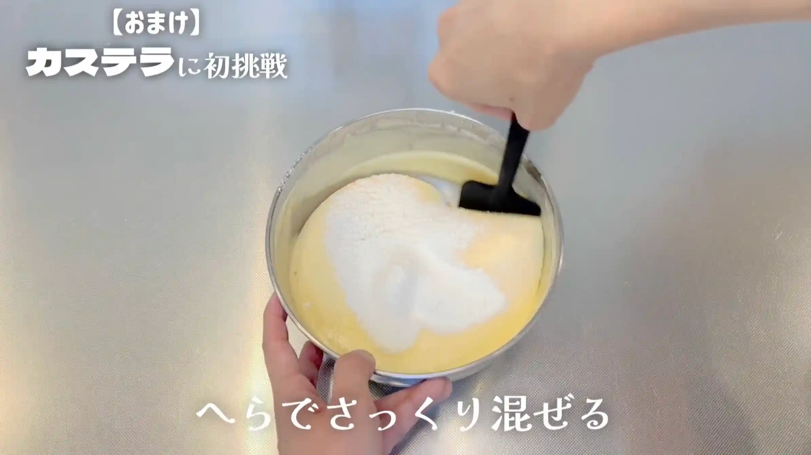
STEP 7
型に流し入れる
カステラ生地をオーブンシートを敷いた型に流し入れます。今回は天板に広げて焼いたところ、かなり薄いカステラになったため、厚みのあるカステラに仕上げたい場合は、天板より面積の小さい型を使うのがおすすめです。
カステラ生地をオーブンシートを敷いた型に流し入れます。今回は天板に広げて焼いたところ、かなり薄いカステラになったため、厚みのあるカステラに仕上げたい場合は、天板より面積の小さい型を使うのがおすすめです。
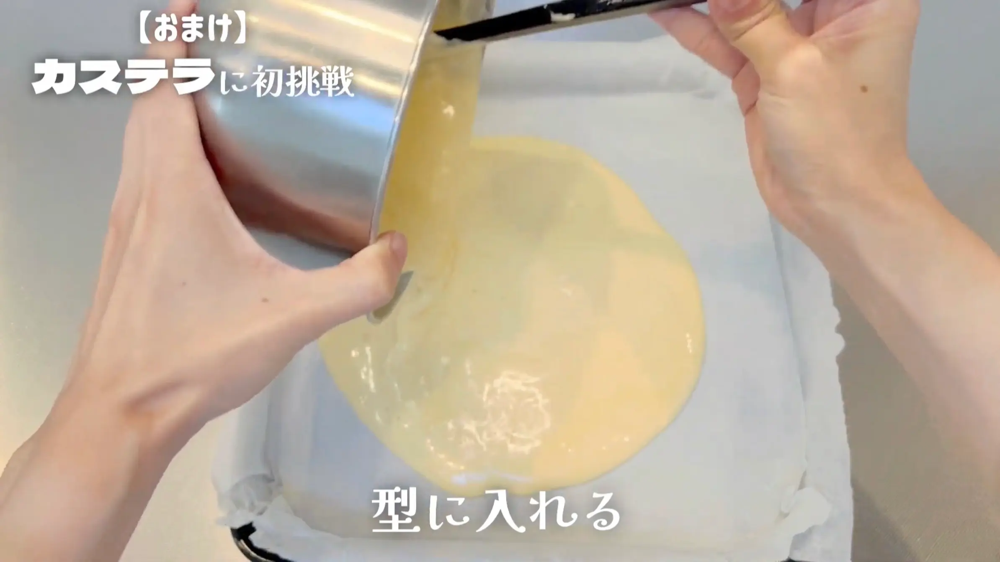
STEP 8
オーブン180℃で15分焼く
表面がきつね色になるまで焼きます。今回は天板で薄く焼いたため、焼き上がりの厚みや焼き時間は型によって変わります。焼き色や生地の状態を確認しながら、ご家庭のオーブンと型に合わせて調整してください。
表面がきつね色になるまで焼きます。今回は天板で薄く焼いたため、焼き上がりの厚みや焼き時間は型によって変わります。焼き色や生地の状態を確認しながら、ご家庭のオーブンと型に合わせて調整してください。
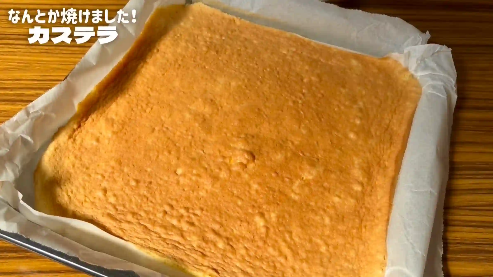
動画でチェック
おいしく作るためのワンポイントコラム
ふんわりパン生地で、手作りカステラを挟む『カステラサンド』。天板に広げて焼いたカステラは、かなり薄くなり、薄いカステラ『ウステラ』が誕生しました。パンの香ばしさとカステラの優しい甘さが合わさった、どこか懐かしさを感じるレシピです。
おいしく仕上げるための大切なポイントや、気づいた点を3つにまとめました。
① きれいな焼き色のコツ
今回のパン生地は、お水ではなく牛乳で仕込むのがポイントです。牛乳に含まれる乳糖や乳たんぱく質などは、焼成時の生地の褐色化に関わるため、パンにきれいな焼き色がつきやすくなります。実際に牛乳で仕込むことで、香ばしく温かみのあるきつね色に焼き上がりました。
また、焼成前に表面へ牛乳を塗ることで、さらに焼き色がつきやすくなります。パン生地をきれいなきつね色に仕上げたいときは、牛乳仕込みがおすすめです。
② クリームのコツ
今回はカスタードクリームを作って挟んでみましたが、実際に食べてみると、昔懐かしい「カステラサンドっぽさ」を出すにはホイップクリームなどの軽いクリームのほうがおすすめだなと感じました。ミルクっぽく軽いクリームのほうが、カステラとの相性が良く感じられます。お好みでアレンジして、ぜひお気に入りの組み合わせを見つけてみてください。
③ カステラ作りの失敗談
実はお菓子作りがあまり得意ではなく、カステラ作りは今回が初挑戦でした。SNSのレシピを参考に、「卵白を冷凍すると早くメレンゲができる」と聞いて試してみたのですが、実際は普通の卵白と同じくらい時間がかかりました……お菓子作りはやはり難しいですね。
さらに、最後の薄力粉を混ぜる工程では「ヘラでさっくり混ぜる」とありましたが、焼き上がりに粉っぽさが残ったため、今回はさっくりしすぎず、粉っぽさがなくなるまでしっかり混ぜたほうが良いなと感じました。
今回は天板に広げて焼いたため、薄いカステラ『ウステラ』が誕生しました。次回はもう少し面積の小さい型を使って、厚みのあるカステラでまた作ってみたいですね！カステラ作りの様子は[動画 11:27]をぜひご参照ください。
失敗も含めて、あれやこれやと試行錯誤して作る時間は楽しいですね！
おいしく仕上げるための大切なポイントや、気づいた点を3つにまとめました。
① きれいな焼き色のコツ
今回のパン生地は、お水ではなく牛乳で仕込むのがポイントです。牛乳に含まれる乳糖や乳たんぱく質などは、焼成時の生地の褐色化に関わるため、パンにきれいな焼き色がつきやすくなります。実際に牛乳で仕込むことで、香ばしく温かみのあるきつね色に焼き上がりました。
また、焼成前に表面へ牛乳を塗ることで、さらに焼き色がつきやすくなります。パン生地をきれいなきつね色に仕上げたいときは、牛乳仕込みがおすすめです。
② クリームのコツ
今回はカスタードクリームを作って挟んでみましたが、実際に食べてみると、昔懐かしい「カステラサンドっぽさ」を出すにはホイップクリームなどの軽いクリームのほうがおすすめだなと感じました。ミルクっぽく軽いクリームのほうが、カステラとの相性が良く感じられます。お好みでアレンジして、ぜひお気に入りの組み合わせを見つけてみてください。
③ カステラ作りの失敗談
実はお菓子作りがあまり得意ではなく、カステラ作りは今回が初挑戦でした。SNSのレシピを参考に、「卵白を冷凍すると早くメレンゲができる」と聞いて試してみたのですが、実際は普通の卵白と同じくらい時間がかかりました……お菓子作りはやはり難しいですね。
さらに、最後の薄力粉を混ぜる工程では「ヘラでさっくり混ぜる」とありましたが、焼き上がりに粉っぽさが残ったため、今回はさっくりしすぎず、粉っぽさがなくなるまでしっかり混ぜたほうが良いなと感じました。
今回は天板に広げて焼いたため、薄いカステラ『ウステラ』が誕生しました。次回はもう少し面積の小さい型を使って、厚みのあるカステラでまた作ってみたいですね！カステラ作りの様子は[動画 11:27]をぜひご参照ください。
失敗も含めて、あれやこれやと試行錯誤して作る時間は楽しいですね！


今回は、パンとカステラを一度に楽しめるどこか懐かしい「カステラサンド」をご紹介します！おうちパンならではの楽しさと、おいしく作るための工夫をたくさん詰め込みました。コラムでは「きれいな焼き色のコツ」「クリームのコツ」「カステラ作りの失敗談」の3つのポイントをご紹介します。